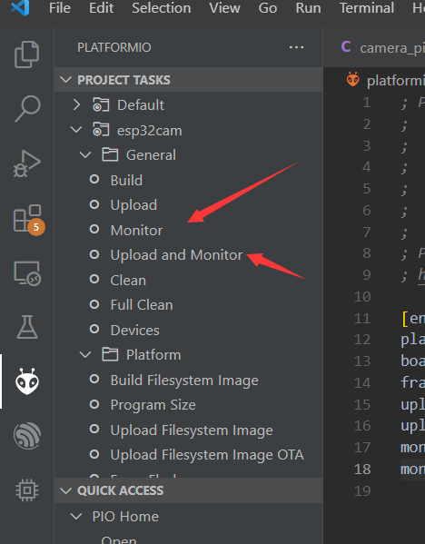
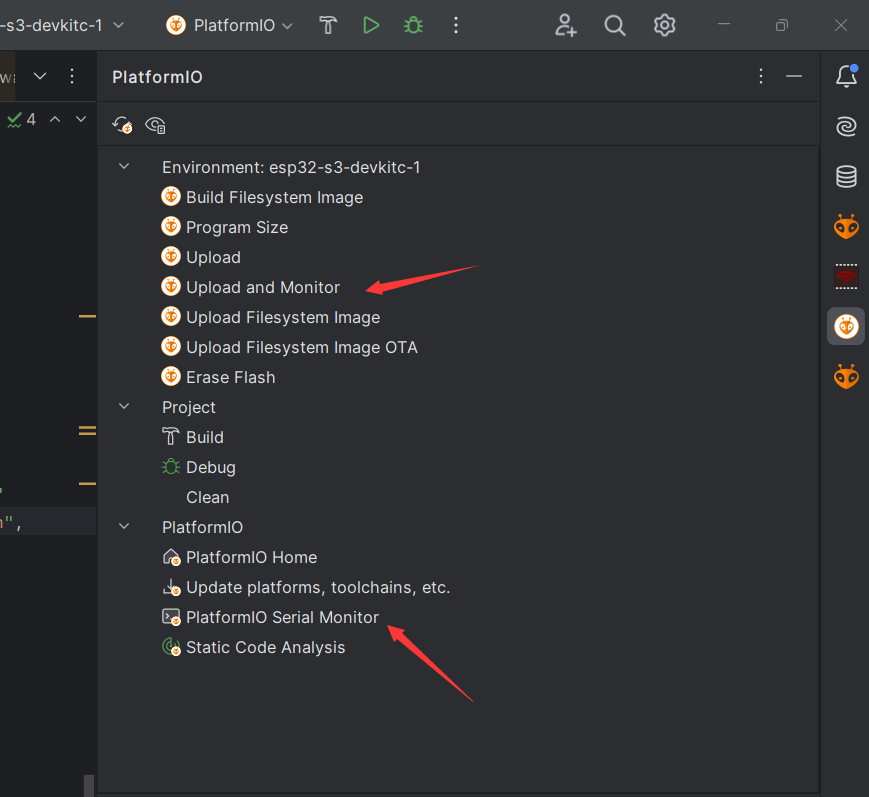

异常解码器
monitor_filters
该配置项本身在非esp32依然可用，这里仅介绍其中一个用于esp32的可选值 esp32_exception_decoder 。(其他选项参考 这里)
esp32异常栈解码器 依赖编译输出的文件夹，可以将经过platformio的串口打印的异常栈十六进制地址，对应异常栈文件夹和行号。 方便排查问题。
[env:esp32-s3-devkitc-1]
platform = espressif32
board = esp32-s3-devkitc-1
framework = arduino
monitor_speed = 115200
upload_speed = 921600
monitor_filters =
direct
esp32_exception_decoder
build_flags =
-D CORE_DEBUG_LEVEL=ARDUHAL_LOG_LEVEL_INFO
-D CONFIG_ARDUHAL_LOG_COLORS=1
这里给出一个异常示例:
#include <Arduino.h>
#include <WiFiClient.h>
void setup()
{
WiFiClient client;
client.connect("192.168.0.1", 80);
}
void loop()
{
}
异常场景就是没有连接wifi的时候使用tcp。也就是由第7行触发。
我们可以由异常栈，看到报错的文件和行号。至于其中s2文件夹无需在意其为s2。 arduino中的idf已经提前编译完成，并非本地的信息。
注意事项
这里设置monitor_filters参数，需要在platformio的monitor中使用。使用其他串口监视器无法解码异常栈。
vscode
 clion
 命令行
pio run -t monitor
Last modified: 08 十月 2024